look for patternstinkerdescribevisualizerepresent symbolicallyprovecheck for plausibilitytake things apartconjecturechange or simplify the problemwork backwardsre-examine the problemchange representationscreate
look for patternstinkerdescribevisualizerepresent symbolicallyprovecheck for plausibilitytake things apartconjecturechange or simplify the problemwork backwardsre-examine the problemchange representationscreate
look for patternstinkerdescribevisualizerepresent symbolicallyprovecheck for plausibilitytake things apartconjecturechange or simplify the problemwork backwardsre-examine the problemchange representationscreate
look for patternstinkerdescribevisualizerepresent symbolicallyprovecheck for plausibilitytake things apartconjecturechange or simplify the problemwork backwardsre-examine the problemchange representationscreate
look for patternstinkerdescribevisualizerepresent symbolicallyprovecheck for plausibilitytake things apartconjecturechange or simplify the problemwork backwardsre-examine the problemchange representationscreate
look for patternstinkerdescribevisualizerepresent symbolicallyprovecheck for plausibilitytake things apartconjecturechange or simplify the problemwork backwardsre-examine the problemchange representationscreate
look for patternstinkerdescribevisualizerepresent symbolicallyprovecheck for plausibilitytake things apartconjecturechange or simplify the problemwork backwardsre-examine the problemchange representationscreate
look for patternstinkerdescribevisualizerepresent symbolicallyprovecheck for plausibilitytake things apartconjecturechange or simplify the problemwork backwardsre-examine the problemchange representationscreate
look for patternstinkerdescribevisualizerepresent symbolicallyprovecheck for plausibilitytake things apartconjecturechange or simplify the problemwork backwardsre-examine the problemchange representationscreate
look for patternstinkerdescribevisualizerepresent symbolicallyprovecheck for plausibilitytake things apartconjecturechange or simplify the problemwork backwardsre-examine the problemchange representationscreate
look for patternstinkerdescribevisualizerepresent symbolicallyprovecheck for plausibilitytake things apartconjecturechange or simplify the problemwork backwardsre-examine the problemchange representationscreate
look for patternstinkerdescribevisualizerepresent symbolicallyprovecheck for plausibilitytake things apartconjecturechange or simplify the problemwork backwardsre-examine the problemchange representationscreate
look for patternstinkerdescribevisualizerepresent symbolicallyprovecheck for plausibilitytake things apartconjecturechange or simplify the problemwork backwardsre-examine the problemchange representationscreate
look for patternstinkerdescribevisualizerepresent symbolicallyprovecheck for plausibilitytake things apartconjecturechange or simplify the problemwork backwardsre-examine the problemchange representationscreate
look for patternstinkerdescribevisualizerepresent symbolicallyprovecheck for plausibilitytake things apartconjecturechange or simplify the problemwork backwardsre-examine the problemchange representationscreate
look for patternstinkerdescribevisualizerepresent symbolicallyprovecheck for plausibilitytake things apartconjecturechange or simplify the problemwork backwardsre-examine the problemchange representationscreate
look for patternstinkerdescribevisualizerepresent symbolicallyprovecheck for plausibilitytake things apartconjecturechange or simplify the problemwork backwardsre-examine the problemchange representationscreate
look for patternstinkerdescribevisualizerepresent symbolicallyprovecheck for plausibilitytake things apartconjecturechange or simplify the problemwork backwardsre-examine the problemchange representationscreate
look for patternstinkerdescribevisualizerepresent symbolicallyprovecheck for plausibilitytake things apartconjecturechange or simplify the problemwork backwardsre-examine the problemchange representationscreate
look for patternstinkerdescribevisualizerepresent symbolicallyprovecheck for plausibilitytake things apartconjecturechange or simplify the problemwork backwardsre-examine the problemchange representationscreate
Habits
look for patternstinkerdescribevisualizerepresent symbolicallyprovecheck for plausibilitytake things apartconjecturechange or simplify the problemwork backwardsre-examine the problemchange representationscreate
look for patternstinkerdescribevisualizerepresent symbolicallyprovecheck for plausibilitytake things apartconjecturechange or simplify the problemwork backwardsre-examine the problemchange representationscreate
look for patternstinkerdescribevisualizerepresent symbolicallyprovecheck for plausibilitytake things apartconjecturechange or simplify the problemwork backwardsre-examine the problemchange representationscreate
look for patternstinkerdescribevisualizerepresent symbolicallyprovecheck for plausibilitytake things apartconjecturechange or simplify the problemwork backwardsre-examine the problemchange representationscreate
look for patternstinkerdescribevisualizerepresent symbolicallyprovecheck for plausibilitytake things apartconjecturechange or simplify the problemwork backwardsre-examine the problemchange representationscreate
look for patternstinkerdescribevisualizerepresent symbolicallyprovecheck for plausibilitytake things apartconjecturechange or simplify the problemwork backwardsre-examine the problemchange representationscreate
look for patternstinkerdescribevisualizerepresent symbolicallyprovecheck for plausibilitytake things apartconjecturechange or simplify the problemwork backwardsre-examine the problemchange representationscreate
look for patternstinkerdescribevisualizerepresent symbolicallyprovecheck for plausibilitytake things apartconjecturechange or simplify the problemwork backwardsre-examine the problemchange representationscreate
look for patternstinkerdescribevisualizerepresent symbolicallyprovecheck for plausibilitytake things apartconjecturechange or simplify the problemwork backwardsre-examine the problemchange representationscreate
look for patternstinkerdescribevisualizerepresent symbolicallyprovecheck for plausibilitytake things apartconjecturechange or simplify the problemwork backwardsre-examine the problemchange representationscreate
look for patternstinkerdescribevisualizerepresent symbolicallyprovecheck for plausibilitytake things apartconjecturechange or simplify the problemwork backwardsre-examine the problemchange representationscreate
look for patternstinkerdescribevisualizerepresent symbolicallyprovecheck for plausibilitytake things apartconjecturechange or simplify the problemwork backwardsre-examine the problemchange representationscreate
look for patternstinkerdescribevisualizerepresent symbolicallyprovecheck for plausibilitytake things apartconjecturechange or simplify the problemwork backwardsre-examine the problemchange representationscreate
look for patternstinkerdescribevisualizerepresent symbolicallyprovecheck for plausibilitytake things apartconjecturechange or simplify the problemwork backwardsre-examine the problemchange representationscreate
look for patternstinkerdescribevisualizerepresent symbolicallyprovecheck for plausibilitytake things apartconjecturechange or simplify the problemwork backwardsre-examine the problemchange representationscreate
look for patternstinkerdescribevisualizerepresent symbolicallyprovecheck for plausibilitytake things apartconjecturechange or simplify the problemwork backwardsre-examine the problemchange representationscreate
look for patternstinkerdescribevisualizerepresent symbolicallyprovecheck for plausibilitytake things apartconjecturechange or simplify the problemwork backwardsre-examine the problemchange representationscreate
look for patternstinkerdescribevisualizerepresent symbolicallyprovecheck for plausibilitytake things apartconjecturechange or simplify the problemwork backwardsre-examine the problemchange representationscreate
look for patternstinkerdescribevisualizerepresent symbolicallyprovecheck for plausibilitytake things apartconjecturechange or simplify the problemwork backwardsre-examine the problemchange representationscreate
look for patternstinkerdescribevisualizerepresent symbolicallyprovecheck for plausibilitytake things apartconjecturechange or simplify the problemwork backwardsre-examine the problemchange representationscreate
of Mind
look for patterns
to look for patterns amongst a set of numbers or figures
tinker
to play around with numbers, figures, or other mathematical expressions in order to learn something more about them or the situation; experiment
describe
to describe clearly a problem, a process, a series of steps to a solution; modulate the language (its complexity or formalness) depending on the audience
visualize
to draw, or represent in some fashion, a diagram in order to help understand a problem; to interpret or vary a given diagram
represent symbolically
to use algebra to solve problems efficiently and to have more confidence in one’s answer, and also so as to communicate solutions more persuasively, to acquire deeper understanding of problems, and to investigate the possibility of multiple solutions
prove
to desire that a statement be proved to you or by you; to engage in dialogue aimed at clarifying an argument; to establish a deductive proof; to use indirect reasoning or a counterexample as a way of constructing an argument
check for plausibility
to routinely check the reasonableness of any statement in a problem or its proposed solution, regardless of whether it seems true or false on initial impression; to be particularly skeptical of results that seem contradictory or implausible, whether the source be peer, teacher, evening news, book, newspaper, internet or some other; and to look at special and limiting cases to see if a formula or an argument makes sense in some easily examined specific situations
take things apart
to break a large or complex problem into smaller chunks or cases, achieve some understanding of these parts or cases, and rebuild the original problem; to focus on one part of a problem (or definition or concept) in order to understand the larger problem
conjecture
to generalize from specific examples; to extend or combine ideas in order to form new ones
change or simplify the problem
to change some variables or unknowns to numbers; to change the value of a constant to make the problem easier; change one of the conditions of the problem; to reduce or increase the number of conditions; to specialize the problem; make the problem more general
work backwards
to reverse a process as a way of trying to understand it or as a way of learning something new; to work a problem backwards as a way of solving
re-examine the problem
to look at a problem slowly and carefully, closely examining it and thinking about the meaning and implications of each term, phrase, number and piece of information given before trying to answer the question posed
change representations
to look at a problem from a different perspective by representing it using mathematical concepts that are not directly suggested by the problem; to invent an equivalent problem, about a seemingly different situation, to which the present problem can be reduced; to use a different field (mathematics or other) from the present problem’s field in order to learn more about its structure
create
to invent mathematics both for utilitarian purposes (such as in constructing an algorithm) and for fun (such as in a mathematical game); to posit a series of premises (axioms) and see what can be logically derived from them
look for patternstinkerdescribevisualizerepresent symbolicallyprovecheck for plausibilitytake things apartconjecturechange or simplify the problemwork backwardsre-examine the problemchange representationscreate
look for patternstinkerdescribevisualizerepresent symbolicallyprovecheck for plausibilitytake things apartconjecturechange or simplify the problemwork backwardsre-examine the problemchange representationscreate
look for patternstinkerdescribevisualizerepresent symbolicallyprovecheck for plausibilitytake things apartconjecturechange or simplify the problemwork backwardsre-examine the problemchange representationscreate
look for patternstinkerdescribevisualizerepresent symbolicallyprovecheck for plausibilitytake things apartconjecturechange or simplify the problemwork backwardsre-examine the problemchange representationscreate
look for patternstinkerdescribevisualizerepresent symbolicallyprovecheck for plausibilitytake things apartconjecturechange or simplify the problemwork backwardsre-examine the problemchange representationscreate
look for patternstinkerdescribevisualizerepresent symbolicallyprovecheck for plausibilitytake things apartconjecturechange or simplify the problemwork backwardsre-examine the problemchange representationscreate
look for patternstinkerdescribevisualizerepresent symbolicallyprovecheck for plausibilitytake things apartconjecturechange or simplify the problemwork backwardsre-examine the problemchange representationscreate
look for patternstinkerdescribevisualizerepresent symbolicallyprovecheck for plausibilitytake things apartconjecturechange or simplify the problemwork backwardsre-examine the problemchange representationscreate
look for patternstinkerdescribevisualizerepresent symbolicallyprovecheck for plausibilitytake things apartconjecturechange or simplify the problemwork backwardsre-examine the problemchange representationscreate
look for patternstinkerdescribevisualizerepresent symbolicallyprovecheck for plausibilitytake things apartconjecturechange or simplify the problemwork backwardsre-examine the problemchange representationscreate
look for patternstinkerdescribevisualizerepresent symbolicallyprovecheck for plausibilitytake things apartconjecturechange or simplify the problemwork backwardsre-examine the problemchange representationscreate
look for patternstinkerdescribevisualizerepresent symbolicallyprovecheck for plausibilitytake things apartconjecturechange or simplify the problemwork backwardsre-examine the problemchange representationscreate
look for patternstinkerdescribevisualizerepresent symbolicallyprovecheck for plausibilitytake things apartconjecturechange or simplify the problemwork backwardsre-examine the problemchange representationscreate
look for patternstinkerdescribevisualizerepresent symbolicallyprovecheck for plausibilitytake things apartconjecturechange or simplify the problemwork backwardsre-examine the problemchange representationscreate
look for patternstinkerdescribevisualizerepresent symbolicallyprovecheck for plausibilitytake things apartconjecturechange or simplify the problemwork backwardsre-examine the problemchange representationscreate
look for patternstinkerdescribevisualizerepresent symbolicallyprovecheck for plausibilitytake things apartconjecturechange or simplify the problemwork backwardsre-examine the problemchange representationscreate
look for patternstinkerdescribevisualizerepresent symbolicallyprovecheck for plausibilitytake things apartconjecturechange or simplify the problemwork backwardsre-examine the problemchange representationscreate
look for patternstinkerdescribevisualizerepresent symbolicallyprovecheck for plausibilitytake things apartconjecturechange or simplify the problemwork backwardsre-examine the problemchange representationscreate
look for patternstinkerdescribevisualizerepresent symbolicallyprovecheck for plausibilitytake things apartconjecturechange or simplify the problemwork backwardsre-examine the problemchange representationscreate
look for patternstinkerdescribevisualizerepresent symbolicallyprovecheck for plausibilitytake things apartconjecturechange or simplify the problemwork backwardsre-examine the problemchange representationscreate
Habits
look for patternstinkerdescribevisualizerepresent symbolicallyprovecheck for plausibilitytake things apartconjecturechange or simplify the problemwork backwardsre-examine the problemchange representationscreate
look for patternstinkerdescribevisualizerepresent symbolicallyprovecheck for plausibilitytake things apartconjecturechange or simplify the problemwork backwardsre-examine the problemchange representationscreate
look for patternstinkerdescribevisualizerepresent symbolicallyprovecheck for plausibilitytake things apartconjecturechange or simplify the problemwork backwardsre-examine the problemchange representationscreate
look for patternstinkerdescribevisualizerepresent symbolicallyprovecheck for plausibilitytake things apartconjecturechange or simplify the problemwork backwardsre-examine the problemchange representationscreate
look for patternstinkerdescribevisualizerepresent symbolicallyprovecheck for plausibilitytake things apartconjecturechange or simplify the problemwork backwardsre-examine the problemchange representationscreate
look for patternstinkerdescribevisualizerepresent symbolicallyprovecheck for plausibilitytake things apartconjecturechange or simplify the problemwork backwardsre-examine the problemchange representationscreate
look for patternstinkerdescribevisualizerepresent symbolicallyprovecheck for plausibilitytake things apartconjecturechange or simplify the problemwork backwardsre-examine the problemchange representationscreate
look for patternstinkerdescribevisualizerepresent symbolicallyprovecheck for plausibilitytake things apartconjecturechange or simplify the problemwork backwardsre-examine the problemchange representationscreate
look for patternstinkerdescribevisualizerepresent symbolicallyprovecheck for plausibilitytake things apartconjecturechange or simplify the problemwork backwardsre-examine the problemchange representationscreate
look for patternstinkerdescribevisualizerepresent symbolicallyprovecheck for plausibilitytake things apartconjecturechange or simplify the problemwork backwardsre-examine the problemchange representationscreate
look for patternstinkerdescribevisualizerepresent symbolicallyprovecheck for plausibilitytake things apartconjecturechange or simplify the problemwork backwardsre-examine the problemchange representationscreate
look for patternstinkerdescribevisualizerepresent symbolicallyprovecheck for plausibilitytake things apartconjecturechange or simplify the problemwork backwardsre-examine the problemchange representationscreate
look for patternstinkerdescribevisualizerepresent symbolicallyprovecheck for plausibilitytake things apartconjecturechange or simplify the problemwork backwardsre-examine the problemchange representationscreate
look for patternstinkerdescribevisualizerepresent symbolicallyprovecheck for plausibilitytake things apartconjecturechange or simplify the problemwork backwardsre-examine the problemchange representationscreate
look for patternstinkerdescribevisualizerepresent symbolicallyprovecheck for plausibilitytake things apartconjecturechange or simplify the problemwork backwardsre-examine the problemchange representationscreate
look for patternstinkerdescribevisualizerepresent symbolicallyprovecheck for plausibilitytake things apartconjecturechange or simplify the problemwork backwardsre-examine the problemchange representationscreate
look for patternstinkerdescribevisualizerepresent symbolicallyprovecheck for plausibilitytake things apartconjecturechange or simplify the problemwork backwardsre-examine the problemchange representationscreate
look for patternstinkerdescribevisualizerepresent symbolicallyprovecheck for plausibilitytake things apartconjecturechange or simplify the problemwork backwardsre-examine the problemchange representationscreate
look for patternstinkerdescribevisualizerepresent symbolicallyprovecheck for plausibilitytake things apartconjecturechange or simplify the problemwork backwardsre-examine the problemchange representationscreate
look for patternstinkerdescribevisualizerepresent symbolicallyprovecheck for plausibilitytake things apartconjecturechange or simplify the problemwork backwardsre-examine the problemchange representationscreate
of Mind
visualize
In the following picture, rectangle ABCD is inscribed in
a
quarter-circle. $DC = 5$, and $CE = 4$. Can you figure
out the
length of diagonal AC?
Often a problem that can seem particularly
perplexing can be solved by looking at it in a
different way. Sometimes the best way to keep
track of the different information and variables
in a problem is to draw a picture of some sort,
to visualize the information so that it is in a form that is
easier to understand. You saw this last year as you solved a
variety of problems, at times by constructing models, and at
times by finding clever ways to visually represent things
that at first seemed quite nonvisual.
Four trees are planted at each corner of a square park.
The city wants to expand the park to twice its current
area, but in such a way that the park is still a square,
and none of the four trees is in the interior of the park.
(The trees cannot be transplanted.) Draw a plan for a new
park that meets these criteria.
The shaded parts of the spheres below are
hemispheres.
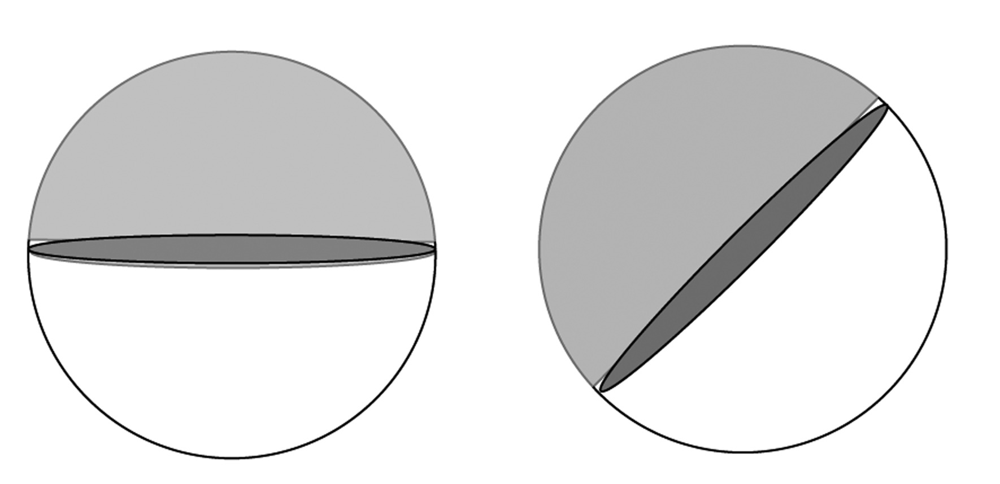
You throw three darts onto the surface of a globe, each
from a randomly chosen direction. What is the probability
that all three darts lie in one hemisphere?
The circles in the diagram each have
radius 1 cm, are tangent to each other and also to the
square PARK. Their centers are on the line PR. Find the
area of the square PARK.
There are many different triangles with side lengths 12 and 13 cm. Which of these triangles has the greatest
area?
A rectangle and a square are inscribed in congruent
circles. The rectangle has a width of 6 and a length
of 8. What is the area of the square?
Three identical, spherical oranges are placed in a bin
as part of a supermarket display. The bin is exactly long
and wide enough to have two oranges fit snugly in the
bottom, but there’s plenty of room to place the third orange on top of these two. If the radius of an orange is 2 inches, find the
height of this small stack.
A street has parallel curbs 40 ft apart. A crosswalk
bounded by two parallel stripes crosses the street at an
angle. The length of the curb between the stripes is 15
feet, and each stripe is 50 feet long. Find the distance
between the stripes.
Let A and B be any two points in a plane.
How many different circles can
you draw that go through points A and B? Can you give the
radius of the smallest possible circle? Of the biggest?
How many different rectangles can
you draw with opposite vertices on points A and B?
PQ and QR are diagonals of two faces of a cube. Find the
measure of $\angle PQR$.
A trapezoid is inscribed in a circle of
radius 5 cm so that one base is a
diameter of the circle, and the other
base has length 5 cm. What is the
perimeter of the trapezoid?
If you start with $\frac{1}{2}$ then add
$\frac{1}{4}$, then $\frac{1}{8}$, then
$\frac{1}{{16}}$, and so on, ad infinitum, what do you
suppose the answer would be? Draw a diagram that would
justify your response.
How many sides does a cube have? How about a
pyramid?
Can you build a closed 3-dimensional shape out of 4 flat
sides? How about out of 3 flat sides? Give examples, or
explain why not.
Suppose you have a box that has a base of 1 inch by 5
inches and that stands 8 inches tall. How many ½ inch
radius spherical balls can you get into this box if you
can’t let any ball protrude above the top of the
box?
Craziola, the wacky pizza guy, has decided he wants to
cut a pizza into as many
pieces as possible, with as few straight cuts as possible.
He doesn’t care at all if the pieces are of equal size, he
just wants to make the most number of distinct pieces.
With 1 cut, he produces 2 pieces. With 2 cuts, he creates a
maximum of 4 pieces, no matter how crazy the 2 cuts he
makes are. How many pieces can he possibly make with 3
cuts? 4 cuts? What about $n$ cuts? Can you find the
pattern?
Is it possible to arrange six unsharpened pencils so that they all
touch each other?
Mr. Shimano gives an extremely difficult Japanese test.
The highest score was 74% and the lowest 31%. Rather than
give a retest, Mr. Shimano decides to raise the 74% to 93%
and the 31% to 61%. For a student who scored 57 on the
original test, what score do you think Mr. Shimano should
give him after the adjustment?
A circle is sitting inside an equilateral
triangle so that it’s tangent to the sides
of the triangle in three places. Another equilateral
triangle is inside the circle
with its three vertices on the circle. If
the length of a side of the smaller triangle is 1 cm, find
the length of a side of the bigger triangle.
Two sides of a triangle measure 6 and 11 cm
respectively. If the length of the third side is also an
integer, what possible lengths can the third side have?
What is the maximum number of acute angles a convex
polygon can have?
A hungry spider and a fly are in a room 30 feet long, 12
feet wide, and 12 feet high. The spider is on one of the
smaller walls, 6 feet from each side and 1 foot from the
ceiling. The fly is on the opposite wall, 6 feet from each
side and 1 foot from the floor. Assume that the fly does
not move (it is paralyzed by fear!) and find the shortest
path that the spider can take to eat the fly.
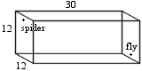
Lesson 1:
Circular Functions
Introduction
You’ve seen sine, cosine, and tangent before. In fact,
you’ve even used them to find missing sides in triangles.
How would you define the sine of $\theta $ ? Cosine of
$\theta $ ?
Use careful construction of a triangle to find $\sin {37^
\circ }$.
Do not use the sine function on your calculator!
Why can’t you use a construction to find $\sin {102^
\circ }$?
Even though we can’t construct a triangle to find the sine
of ${102^ \circ }$, your
calculator can tell you an approximate value! In this lesson,
we will discover
a new way to think about sine and cosine—a way that makes
calculating the
values of $\sin {102^ \circ }$, $\cos 1002^\circ$, and $\tan \left( { -
{{10002}^ \circ }} \right)$ possible.
Development
Most of the problems in this section require carefully drawn
diagrams.
A wheel of radius one foot is placed so that its center is
at the origin, and a pin on the rim is at (1, 0). The diagram
below shows the wheel after it has been spun an angle
${\theta ^{}}$ in a counterclockwise direction.
Now consider the function $P(\theta )$, which outputs
the
coordinates of the pin after the wheel has been spun an angle
${\theta ^{}}$ in a counterclockwise direction. So, for
example, $P({0^\circ})=(1,0)$ and $P({270^\circ})=(0, - 1)$.
Find $P(\theta )$ when:
$\theta = {90^ \circ }$
$\theta = {45^ \circ }$. Give an
exact answer.
$\theta = {30^\circ}$. Give an exact
answer.
$\theta = {57^\circ}$
$\theta $ is some measure between
${0^\circ}$ and ${90^\circ}$. (Your answer should be expressed in
terms of $\theta $.)
For values of ${\theta ^{}}$ between ${0^\circ}$ and ${90^\circ}$, how are $\cos \theta $ and
$P(\theta )$ related?
Now, let’s consider angles greater than ${90^\circ}$.
Calculate $P(150^\circ)$, with P being the same
position function as in question 4.
What is $P(253^\circ)$?
Compare these values to the sine
and cosine of $150^\circ$ and $253^\circ$.
Using the diagram and your
calculations, what do you think the tangent of $253^\circ$ is? The
tangent of $150^\circ$? Check them on your calculator.
It is the convention for rotations that motion in a
counterclockwise direction
is considered positive, while motion in a clockwise direction
is considered
negative. So if our wheel is spun $57^\circ$ counterclockwise we would
input $57^\circ$
in our function $P(\theta )$, as we did in problem 1, but if
our wheel is spun $57^\circ$ clockwise we would input $–57^\circ$ in our
function $P(\theta )$. So the output for would be the
coordinates of the pin after the wheel is spun $57^\circ$
clockwise.
Find:
$P( - 240^\circ )$. Give an exact
answer.
$P( - 2640^\circ )$. Give an exact
answer.
$P( - 237^\circ )$.
$\tan ( - 237^\circ )$.
$P( - \theta )$, where $0^\circ
< \theta < 90^\circ $. (Your answer should be
expressed in terms of $\theta $.)
Now define sine, cosine, and tangent of ${\theta ^{}}$ for
every value of ${\theta ^{}}$.
For angles between 0 and 90 degrees, is using your
definition in problem 7 equivalent to using your definition
in problem 1? Why or why not?
$P(46280^\circ ) = ( - 0.94, - 0.34)$. Without using the
cosine button on your calculator, find the cosine of
$44480^\circ $.
Let $\cos \theta = - 0.4$.
For how many angles is that
true?
How many of these angles are
between $–180^\circ$ and $360^\circ$?
With the help of your calculator
find all the angles in part b.
Assuming that $\cos 80^\circ = 0.17$, use the symmetry of
the circle to find $\cos 100^\circ $, $\cos ( - 260^\circ )$, $\cos 260^\circ $, $\cos 280^\circ $, $\sin 190^\circ $,
and $\sin ( - 10^\circ )$.
Let’s revisit question 4, but with a wheel of radius 7
feet
instead of 1 foot. The wheel is still centered at $(0,0)$,
and still with a pin at $(7,0)$. Let $Q(\theta )$ be the
function which outputs the coordinates of the pin after this
larger wheel has been spun an angle ${\theta ^{}}$ in a
counterclockwise direction.
What is $Q(48^\circ )$?
What is $Q(109^\circ )$?
How would you define sine and
cosine of ${\theta ^{}}$ using this $Q(\theta )$ function? How
would you define tangent?
How would you define sine, cosine,
and tangent using a circle of radius $r?$
In the diagram below, there is a circle of radius 2
inches, with radii drawn at ${15^\circ}$ intervals.
Use careful estimates and the
conclusion of problem 12 to calculate the sines of ${30^\circ}$,
${60^\circ}$, ${90^\circ}$, $120^\circ $, ..., ${360^\circ}$.
Using your calculations in part a,
sketch a graph with $\theta $ on the horizontal axis and
$\sin \theta $ on the vertical axis. (Use values of $\theta $ from $- {360^\circ}$ to ${360^\circ}$.)
Surprise! There are actually three more trigonometric ratios
(functions) in
addition to the three you already know. Here are their names
and definitions:
Cosecant of angle $\theta $, written $\csc \theta $, is
defined thus: $\csc \theta = \frac{r}{y}$
Secant of angle $\theta $, written $\sec \theta $, is
defined thus: $\sec \theta = \frac{r}{x}$
Cotangent of angle $\theta $, written $\cot \theta $, is
defined thus: $\cot \theta = \frac{x}{y}$
Use the unit circle to find $\csc \theta $, $\sec \theta
$ and $\cot \theta $ for $\theta = 240^\circ$.
Practice
Use the symmetry of the circle to complete the following
chart. Give exact answers. Copy the chart into your
notebooks.
$\theta $
30°
45°
60°
315°
–210°
210°
–315°
150°
240°
$\sin \theta $
$\cos \theta $
$\tan \theta$
(For this problem use the circle of problem 13.)
Use careful measurements and the
conclusion of problem 7 to calculate the cosines of ${30^\circ}$, ${60^\circ}$, ${90^\circ}$, etc.
Using your calculations in part a,
sketch a graph with $\theta $ on the horizontal axis and
$\cos \theta $ on the vertical axis. (Use values of $\theta $ from $- {360^\circ}$ to ${360^\circ}$.)
Determine, without using your calculator, which of the
following expressions are the same as $\sin {27^\circ}$.
Find at least two values for $\theta $ that fit the
equation $\sin {\theta ^\circ}$=$\dfrac{{\sqrt 3 }}{2}$. How
many such values are there?
Problems
At constant speed, a wheel rotates once counterclockwise
every 8 seconds. The center of the wheel is $(0,0)$ and its
radius is 1 foot. A pin is initially at $(1,0)$. Where is it
69 seconds later?
A wheel whose radius is 1 is placed so that its center is
at $(3,2)$. A pin on the rim is located at $(4,2)$. The
wheel is spun $\theta $ degrees in the counterclockwise
direction. Now what are the coordinates of that pin? Does
your answer work for 90 degrees? 180 degrees?
For the following equations use a circle of radius 2 (and
your calculator for part b only) to find all solutions
$\theta $ between ${0^\circ}$ and ${360^\circ}$:
$\cos \theta = - \dfrac{{\sqrt 3
}}{2}$
$\tan \theta = 6.3138$
$\sin \theta = - \dfrac{{\sqrt 2
}}{2}$
$\cos \theta = \cos ({251^\circ})$
$\sin \theta = \sin {580^\circ}$
${(\tan \theta )^2} = 3$
Find all solutions $t$ between ${360^\circ}$ and ${720^\circ}:$
$\cos t = \sin t$ (no
calculator)
$\sin t = - 0.9397$
$\cos t < \dfrac{{\sqrt 3 }}{2}$ (no calculator)
In the next few problems you are asked to come up with
conjectures or to examine the validity of various statements.
You might want to see if the conclusion reached is even
plausible, by looking at specific, easy-to-check cases. A
simple check will either give the conclusion credence (and thus
makes it worth trying to prove) or disprove it instantly.
Asked to simplify the expression $\sin ({180^\circ} - \theta
)$, Alex volunteered the following solution: $\sin ({180^\circ}
- \theta ) = \sin {180^\circ} - \sin \theta $, and, because
$\sin {180^\circ}$ is zero, it follows that $\sin ({180^\circ} -
\theta )$ is the same as $- \sin \theta $.
Is this conclusion plausible?
If it is plausible, try to prove
the result. If it isn’t, can you come up with a correct
way to express $\sin ({180^\circ} - \theta )$ in simpler
form?
Answer the same questions for $\cos
({180^\circ} - \theta )$.
Is it the case that $\sin ({90^\circ} - \theta ) = \cos \theta
$ ? Explain. Then write simpler, equivalent expressions for
$\cos ({90^\circ} - \theta ),\,\,\sin ({90^\circ} + \theta ),\,\,\cos
({90^\circ} + \theta )$.
Is $\sin ( - \theta )$ always the same as
$- \sin (\theta )$? What can be said
about $\cos ( - \theta )$?
Do the following problems
without using a calculator. Explain
your reasoning.
Which is larger: $\cos {311^\circ}$ or
$\cos {312^\circ}$?
Which is larger: $\sin {311^\circ}$ or
$\sin {312^\circ}$?
If $\sin A$ is known to be 0.96, then what is $\cos A$?
What if it is also known that $A$ is an obtuse angle?
Hendrickson is thinking of an angle $\theta $ where $\tan
\theta > \sin \theta $, and also where $\sin \theta <
\cos \theta $. Give two possible values for $\theta $ that
are in different quadrants.
Rodney is running around the circular track ${x^2} + {y^2}
= 10000$, whose radius
is 100 meters, at 4 meters per second.
Rodney starts at the point $(100,0)$ and runs in the
counterclockwise direction. After 30 minutes of running, what
are Rodney’s coordinates?
Copyright Phillips Exeter Academy
Below are the graphs of $y = \cos x$ and $y = 0.7431$
(dotted). Given that $Q=(42, 0.7431)$, find coordinates for
the intersection points P, R, and S without using a
calculator. Use a calculator to check your answers.
Copyright Phillips Exeter Academy
For how many angles in the first quadrant will $\sin
\theta $ be rational?
One way to find the sine of a 60 degree angle is to draw a circle of radius 2 and draw the related 30$^\circ$-60$^\circ$-90$^\circ$ triangle. Find the length of the arc of the circle that
is intercepted by this 60 degree angle.
Choose an angle $\theta $ and calculate ${(\cos \theta
)^2} + {(\sin \theta )^2}$. Repeat with several other values
of $\theta $. Explain the results. (Note that it is
customary to write ${\cos ^2}\theta + {\sin ^2}\theta $ instead of ${(\cos \theta )^2} + {(\sin \theta )^2}.)$
For any angle $\theta $, is it true that $1 + {\tan
^2}\theta = {\sec ^2}\theta $ ? If so, prove it. If not,
produce a counterexample.
Asked to find an expression that is
equivalent to $\cos(\alpha + \beta)$, Laura responded $\cos (\alpha ) + \cos (\beta
)$. What do you think of Laura’s answer, and why?
On your calculator, draw a graph of the function $y =
\tan x$ with ${0^\circ} < x < {360^\circ}$. Something appears
to be wrong here. Say what you think is wrong and explain
what’s going on.
Solve the following without finding the angle $\theta $.
Given that $\sin \theta =
\frac{{12}}{{13}}$, with ${0^\circ} < \theta < {90^\circ}$, find the values of $\cos \theta $ and $\tan \theta $.
Given that $\cos \theta =
\frac{7}{{25}}$, with ${270^\circ} < \theta < {360^\circ}$,
find $\sin \theta $ and $\tan \theta $.
Suppose that $\csc \theta = -\frac{{
25}}{7}$ and $\tan \theta < 0$. Evaluate, in fractional
form, the remaining five trigonometric functions of $\theta $.
The point $P( - 12,16)$ is on a
circle whose center is the origin. Find the cosine of angle
$\theta $, the angle between the positive $x$-axis and the
radius to $P$.
The point $P$ is on a circle whose
center is the origin, and the $x$-coordinate of $P$ is five times
its $y$-coordinate. Find the cosine of angle $\theta $, the
angle between the positive $x$-axis and the radius to $P$.
Is it possible for $\sin \theta $ to be exactly twice the
size of $\cos \theta $ ? If so, find such an angle $\theta.$ If not, explain why not.
Find the three smallest positive solutions to ${2\sin \theta} = {–1.364}$.
Don’t use a calculator for this problem.
Reduce: $\dfrac {{5ab}-{10bc}} {ab}$
Reduce: $\dfrac {{3x^2}-{24}} {3x}$
Solve for $x$: $2{x^2} - 3x - 2 =
0$
Add: $\dfrac{7}{4} +
\dfrac{{3a}}{b}$
Subtract: $\dfrac {x} {4} - \dfrac {x-1} {2}$
Find all the solutions $x$, given ${0^\circ} ≤ {x} < {360^\circ}$ .
$(\cos x - .5)(\sin x +
\dfrac{{\sqrt 3 }}{2}) = 0$
${(\cos x)^2} - 5\cos x + 4 =
0$
$3{(\tan x)^2} + 5\tan x = 0$
$2{(\sin x)^2} + \sin x = 3$
Exploring in Depth
Paul rides a Ferris wheel for five minutes. The diameter
of the wheel is 10 meters,
and its center is 6 meters above the ground. Each revolution
of the wheel takes 30 seconds. Paul's fear of heights kicks in when he is more than 9 meters above the ground. For
how many seconds does Paul feel uncomfortable?
Jasper’s bike has wheels that are 27 inches in diameter.
After the front wheel picks up a tack, Jasper rolls another
100 feet and stops. How far above the ground is the tack?
You have a circular dartboard. Its target area is defined
in an unusual way. Take any point within the dartboard. Draw
a straight line that goes through this point and the center
of the board. Measure the angle this line makes with the line
going from the center to the “easternmost” point on the dart
board. If the tangent of this angle is between -0.2 and 0.6,
then the point is shaded. Otherwise, it is not shaded. What
are your chances of hitting this target area?
Given that $\sin \theta = k$, and that ${0^\circ} < \theta
< {90^\circ}$, find expressions for $\cos \theta $ and
$\tan \theta $.
What do the graphs of $y = \sin x$ and $y = \sin 2x$ have in common, and how do they differ? How about the graphs
of $y = \cos x$ and $y = \cos mx$, where $m$ is any
positive integer?
Starting at the same spot on a circular track that is 80
meters in diameter, Andy and Brandon run in opposite
directions,
at 300 meters per minute and 240 meters per minute,
respectively. They run for 50 minutes. What distance
separates Andy and Brandon when they finish? Interpret the
word distance any way you wish.
Copyright Phillips Exeter Academy
Lesson 2:
Law Of Sines And Law Of Cosines
Introduction
The Leaning Tower of Pisa
The Leaning Tower of Pisa
has been leaning almost since the onset of construction in
1173. From ground to top, the tower is 183.27 ft along the
lowest side and 186.02 ft along the highest side. The angle of
slant of the tower—formed by its shorter slant height and the
ground—is ${95.5^ \circ }$. An apocryphal tale states that
Galileo Galilei (1564-1642), an Italian physicist,
mathematician, and philosopher, dropped two cannon balls of
different weights from the top of this leaning tower in trying
to demonstrate that the descending speed of a falling body is
independent of its weight.
What is the distance traveled by an object dropped from the
top of the Tower of Pisa, on its lowest side, when it hits the
ground?
What is the horizontal distance from the point where the
object hits the ground to the base of the tower?
The Tower of Pisa first acquired a slant after the third
floor was built in 1178. More recently, in 1990, it was closed
to the public because of safety fears. In fact, the tower was
on the verge of collapse, and it was projected that it would
have collapsed between 2030 and 2040. However, it has been
straightened a bit, but still remains slanted (the tower has
been reopened to the public). Thus, the angle of slant of the
Tower of Pisa, $\alpha $, has been changing for centuries. The
following is a sketch of the situation.
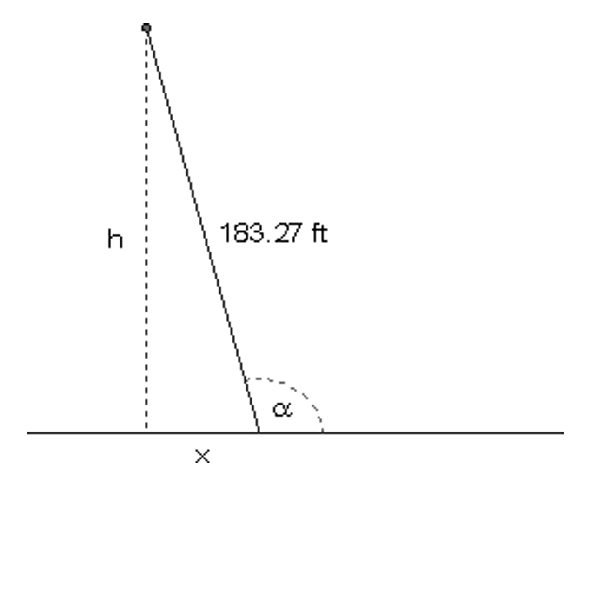
In trying to determine a general expression for the
distance, $h$, traveled by an object dropped from the top of the
Tower of Pisa’s lowest side when it hits the ground (assuming
that the shorter length of the tower has not changed), Gerald
found the following expression.
${h} = {183.27\sin \alpha}$
For the horizontal
distance from the point where the object hits the ground to the
base of the tower, Gerald found the following expression.
${x} = {-183.27\cos \alpha}$
Do you agree with these
statements? Explain your answer.
You have no more than two seconds after reading the
statement of this problem to solve it.
What is the value of ${\sin ^2}\left( {\dfrac{{\sqrt[7]{{123456}}}}{{\pi + 13}}} \right) + {\cos ^2}\left( {\dfrac{{\sqrt[7]{{123456}}}}{{\pi + 13}}} \right)$?
Development
We follow the convention of labeling the angles of a
triangle using capital letters, and the lengths of the
corresponding opposite sides with the corresponding lower-case
letters. For example, we may label A, B, C the angles of the
triangle, and a, b, c the corresponding opposite sides, as in
the figure below.
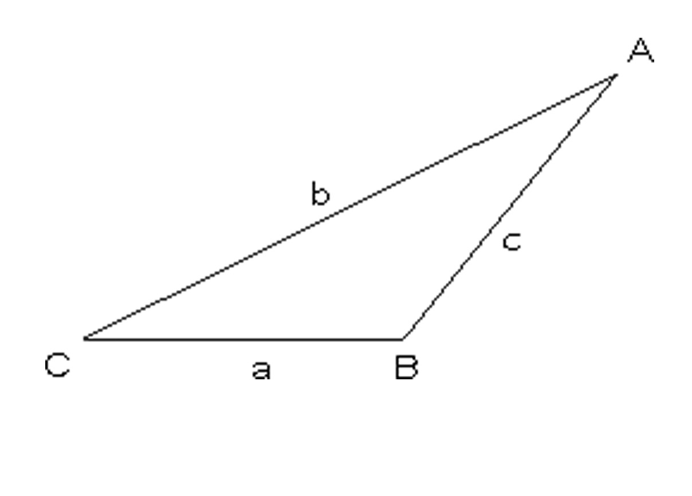
The Bermuda Triangle
The “Bermuda Triangle” or “Devil’s Triangle” is an imaginary
area located off the southeastern Atlantic coast of the United
States of America, which is noted for a supposedly high
incidence of unexplained disappearances of ships and aircraft.
The vertices of the triangle are generally believed to be
Bermuda, Miami (Florida), and San Juan (Puerto Rico).
One of the amazing stories from this triangle tells that an
aircraft (A in the figure below) was 747.23 miles from the
airport of Miami (M in the figure), on the line joining Miami
and Bermuda, when its crew received an SOS signal from Cyclops
(C in the figure), a ship located at a point on the line
joining Miami airport and San Juan, which was sinking. Flight
controllers at the airport were able to estimate the measure of
$\angle AMC$ to be ${52^ \circ }$.
Based on the previous story, Mr. Thomas Howard designed a
problem for his mathematics class. The initial situation
described in the story, however, contained more than the
minimal information required to solve the problem; therefore,
he divided the class into two groups, Group I and Group II, and
gave each group a problem with different pieces of information,
but the same goal to determine how many miles the aircraft had
to travel through the purportedly dangerous Bermuda Triangle
before reaching Cyclops.
Group I: Besides the general information described above, it
is known that $m\angle C = {60^ \circ }$. What is the distance
between the aircraft A and the sinking ship Cyclops C? Find a
solution to this problem and explain how you arrived at your
answer.
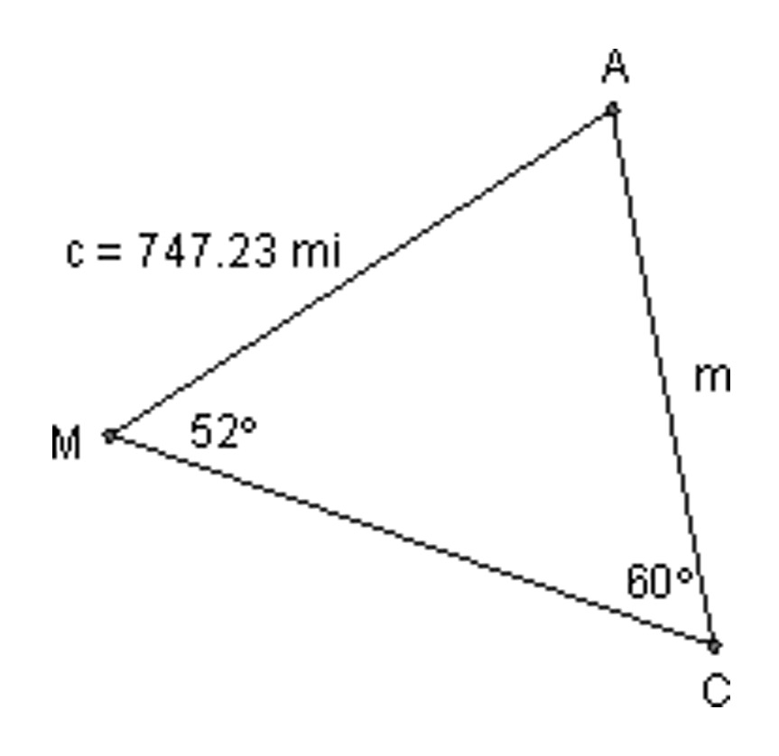
Group II: Besides the original and general information, it
is known that the distance from Cyclops to the airport of Miami
is 800 miles, as shown in the figure below. What is the
distance between the aircraft A and the sinking ship Cyclops C?
Find a solution to this problem and explain how you arrived at
your answer.
In Problem 5, if the distance given were m and the one to be
found were c, the problem could be solved in a similar way.
Consider the more general triangle below.
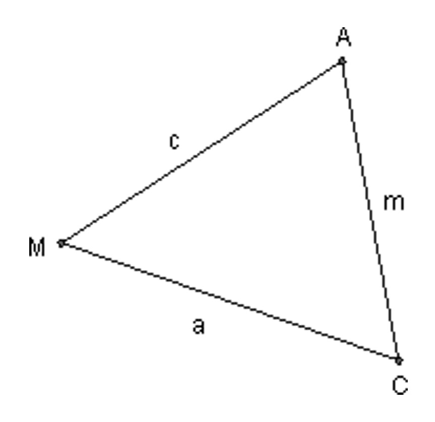
Draw the altitude from A to side
$\overline {MC} $, and prove that ${\dfrac {c} {\sin C}} = {\dfrac {m} {\sin M}} \;$.
Hint: If $h$ is the length
of the altitude from A to $\overline {MC} $, find h in $\Delta {ADM}$ in
terms of $c$ and $\angle M$. Then find $\sin C$ in $\Delta {ADC}$.
In group II, Rebecca noticed that if the measure of $\angle
M$ were ${90^ \circ }$ rather than ${52^ \circ }$, the
Pythagorean Theorem would guarantee that ${m^2} = {a^2} +
{c^2}$. “However,” she said, “since $\angle M$ is less than
${90^ \circ }$, the Pythagorean relationship among $m$, $a$, and $c$
must be adjusted.” This adjustment is the result that you are
about to find in Part c of the following problem.
Consider the triangle in Mr. Howard’s problem in a more
general form, as shown below, and prove the following.
In part c of the previous problem, expand the square on
the right side of the equality. Then use the trigonometric
identities that you have learned thus far to find an expression
as simple as possible relating $m$ to $c$, $a$, and $\angle M$.
As announced above, the expression relating $m$ with $c$, $a$, and
$\angle M$ that you may have found in the previous problem is
the adjustment to the Pythagorean relationship ${m^2} = {a^2} +
{c^2}$ required when $m\angle M < {90^ \circ }$. In a
similar way, adjustments to the Pythagorean relationship
relating $a$ to $m$ and $c$ as well as to that relating $c$ to $a$ and $m$
may be needed when either $m\angle A$ or $m\angle C$ is not
${90^ \circ }$, as in the case illustrated above.
Consider the general triangle shown below.
If $m\angle A = {90^ \circ }$, how
would $a$ be related to $m$ and $c$?
Conjecture an adjustment to the
Pythagorean relationship in part a that may be required when
$m\angle A \ne {90^ \circ }$. Would the proof of your
conjecture in this case be quite different from that developed
in Problems 8 and 9? Explain.
If we had that $m\angle C = {90^
\circ }$, how would $c$ be related to $a$ and $m$?
Conjecture an adjustment to the
Pythagorean relationship in part c that may be required when
$m\angle C \ne {90^ \circ }$. Would the proof of your
conjecture in this case be quite different from that required
in Part b? Explain.
Summarizing, given a triangle as the one below,
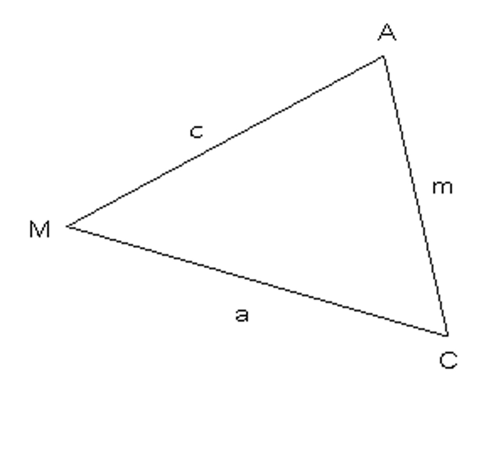
two sets of equalities have been found.
On the one hand, the set of equalities that you may have
proven in Problem 7 is known as the Law of Sines.
On the other hand, the set of equalities that you may have
found in Problems 9, 10b, and 10d is known as the Law of
Cosines.
Practice
Find the indicated side lengths or angle measures in the
following figures.
Further Development
When the students in Mr. Howard’s class shared their
findings (the Law of Sines and the Law of Cosines) the
information contained in these laws was considered “the key” to
find missing side lengths or angles in any triangle, when basic
information about the triangle is known. However, in reality in
all the proofs only acute triangles—triangles with each of
their three angles being less than ${90^ \circ }$—were
used.
Regarding Mr. Howard’s problem, consider the following
situation where $m\angle M = {142^ \circ }$.
Does the proof of the Law
of Sines (in Problem 7), or that of the Law of Cosines (in
Problems 8 and 9), support the use of either of these laws to
find $m$ in this triangle, which is not an acute triangle?
Explain.
Consider the following obtuse $\Delta {AMC}$ (that is, a triangle
containing an angle greater than ${90^ \circ }$).
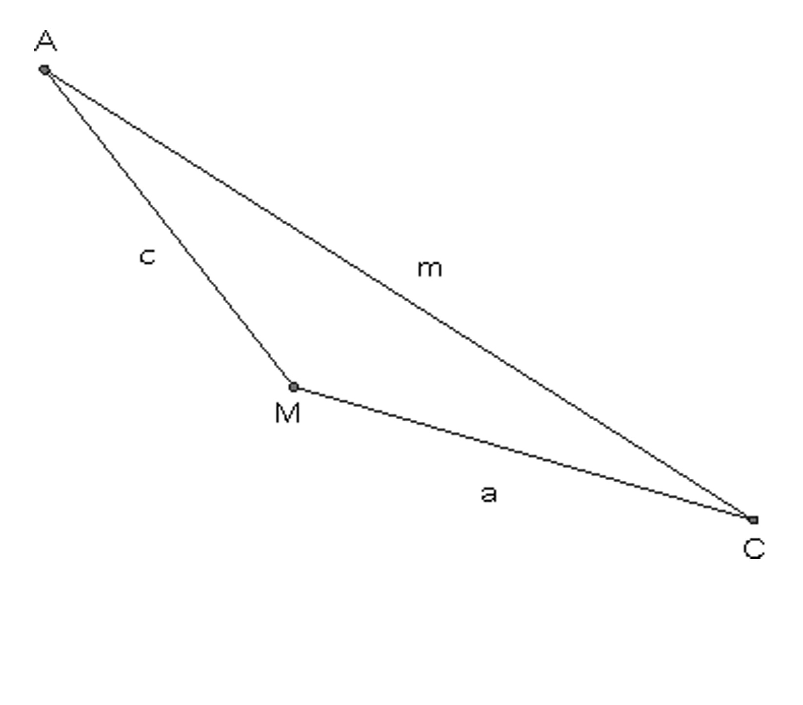
Prove that
$\dfrac{c}{{\sin C}} = \dfrac{m}{{\sin M}} = \dfrac{a}{{\sin A}}$.
Consider again the obtuse $\Delta {AMC}$. Dashed lines have been added to
help you prove the equality stated in Part (a).
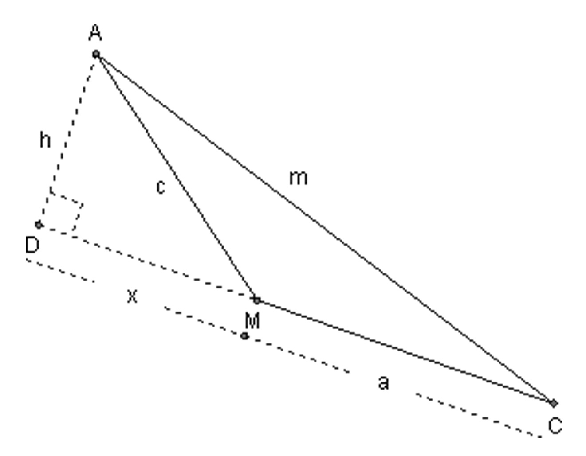
Prove that ${m^2} = {a^2} + {c^2} -
2ac\cos M$.
Prove that ${a^2} = {m^2} + {c^2} -
2mc\cos A$.
Prove that ${c^2} = {m^2} + {a^2} -
2ma\cos C$.
Is the Law of Sines or the Law of Cosines worth remembering?
Would it be easier always to construct appropriate
perpendicular lines and use only trigonometric ratios to solve
the problems that may require them?
Practice
Find the indicated side lengths or angle measures in the
following figures.
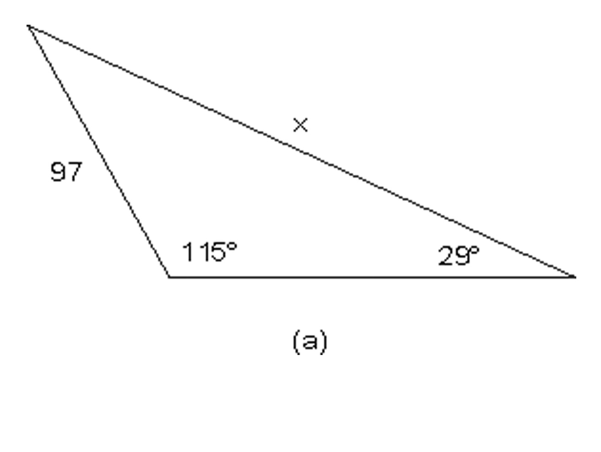
Two tracking stations are monitoring the path of a
satellite, which has passed to the west of both stations. From
station
A, the angle of elevation to the satellite is 85.5 degrees.
From station B, the angle of elevation to the satellite is 82
degrees. Stations A and B are 65 miles apart.
Find the distance from the satellite
to tracking station A.
Find the height of the satellite
above the ground.
The distance from Chicago to St. Louis is 440 km, from
St. Louis to Atlanta 795 km, and from Atlanta to Chicago 950
km. What are the angles in the triangle with these three cities
as vertices?
In the figure below, find the measure of angle A.
After having done these problems in the Practice section,
you may be better
prepared to answer question 15, repeated here:
Is the Law of Sines or the Law of Cosines worth remembering?
Would it be easier always to construct appropriate
perpendicular lines and use only trigonometric ratios to solve
the problems that may require them?
Problems
Melissa walks along the path shown below: She goes 500
ft along a sidewalk adjacent to a field, then turns 70
degrees, walks a way across the field, and stops. Looking
back, she measures a 47 degree angle
between her path across the field and her line of sight to
her starting point.
Find the distance that Melissa
walked across the field.
How far away is Melissa from her
starting point?
A sailboat is attempting to sail between two islands,
100 miles apart. From the very beginning, a wind blows the
boat 15 degrees off its course. After the sailboat has been
sailing for an hour and a half at 25 mph, it corrects its
course so it is sailing straight toward the second
island.
By how much does the sailboat need
to increase its speed if it wants to arrive at its
destination at the same time it would have going 25 mph along
the straight path?
Find the “turn angle” – the number
of degrees the sailboat needed to turn in order to correct
its course.
Julie needs to find the distance between two trees A and
B on the opposite side of a river. On her side of the
river, she chooses two points C and D, 35 feet apart. Then
she measures the angles shown in the diagram. What
distance
between the trees will she calculate?
Find all three angles of this triangle. Check to be sure
that your answer is
plausible.
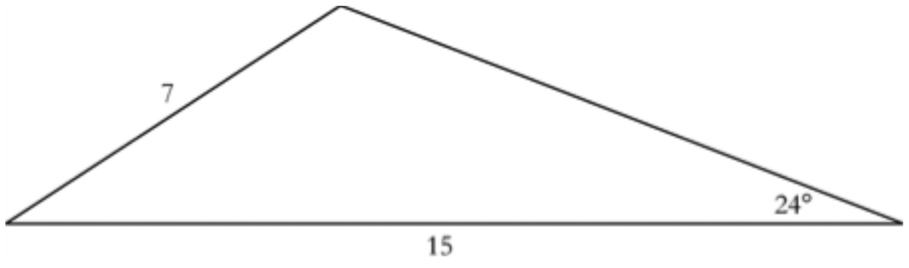
Find the measure of all the angles in the trapezoid.
In the figure below, find X.
In the figure below, the length of the chord drawn from
A is 8, and the length of the chord drawn from B is 10.
Find the length of arc AB. (Hint: you will need
to know the radius of the circle.)
The function ThirdSide takes an angle, theta, and
outputs the third side of a
triangle with sides 3 and 4 and included angle theta.
Find $Thirdside({80^ \circ })$.
What are the minimum and
maximum possible values for $Thirdside(\theta )$?
Justify your answer
in two different ways:
by visualizing what different triangles would look like for
different values of ${\theta ^{}}$.
by looking at the Law of Cosines formula and seeing how the value of theta affects the value of each term.
Often times, a problem that seems to be hard may be
simplified a lot by just drawing a diagram or adding a couple
of lines—or even just points—to a diagram already in place.
These additions (to the concrete situation given) are
implemented to visualize and better understand problems which
may have been initially confusing. In the following problems,
29 through 33, you will have the chance to use this
mathematical habit of mind repeatedly.
A triangle has a 13-inch, a 14-inch, and a 15-inch side.
To the nearest tenth of an inch, how long is the median
drawn to the 14-inch side? (Recall that a median is a line
segment drawn from a vertex of a triangle to the midpoint
of the opposite side.)
A “half-regular” pentagon isn’t perfectly regular, but
it does fold perfectly in half (the left half is the same
as the right half – it’s symmetric across a vertical axis).
The half-regular pentagon below has a top angle of 160°, a
side length of 8 for the top two sides, a side length of 9
for the base, and a total height of 14 (from the top point
down to the base).
Find the area and
perimeter of the
pentagon.
The diagram below represents a plot of a piece of land.
Find the area of the plot.
In this diagram, $\Delta {ABC}$ and $\Delta {CDF}$ are both
isosceles. $AB = AC$ and $DF = DC$. $\angle E$ and
$\angle EFD$ are right angles.
Find all the angles in the
diagram.
Find $AF$.
The lengths of three sides and the measure of two angles
of a quadrilateral are given, as shown in the figure
below.
Determine the length of the
diagonals of this quadrilateral. Round answers to two
decimal places.
Determine the perimeter of this
quadrilateral. Round the answer to two decimal places.
Determine the area of this
quadrilateral. Round the answer to two decimal places.
You’re looking at the hour hand and the minute hand on a
clock at exactly 1:20. The tips of the hands are 3 inches
apart. The hour hand is 2.15 inches long. (Remember – the
hour hand is not pointing directly at the 1, since it’s
after 1:00!)
What’s the angle between the
hands?
Draw the triangle that this
forms, and find the other angles in the triangle.
Find the length of the minute
hand.
A bird sees two worms on the ground. The worms are 23
inches apart. The bird flies at the worm on the left, but
when it’s exactly halfway to the worm, it turns and flies
to the worm on the right. The angles are as marked, and the
angle marked $82^\circ$ refers to the entire angle on the right
side. Find all the other lengths and angles in the diagram
below.
Use the law of cosines to determine the angles in a
triangle that has sides of lengths 7.3, 23.1, and 15.7.
Why would this problem be easier if the sides were 8.1,
23.9, and 16.2?
In the figure below, find AB.
A balloon, B, is tethered to the ground by wires
$\overline {AB} $ and $\overline {CB} $ as shown in the
figure below. How high, $h$, is the balloon above the
ground?
In any triangle $ABC$, prove that $m\angle C = {\cos ^{ -
1}}\left( {\dfrac{{{a^2} + {b^2} - {c^2}}}{{2ab}}} \right)$.
Exploring in Depth
Borga and Dhaka City are two of the main cities in
Bangladesh. Borga Airport and Dhaka City Airport are 260 km
apart. The ground controllers at Dhaka City monitor planes
within a 100-km radius of the airport.
Plane 1 is 220 km from Borga
Airport at an angle of ${32^ \circ }$ to the straight line
between the airports. Is it within the range of Dhaka City
Ground Control?
Plane 2 takes off from Borga
Airport toward Dhaka City Airport at an angle ${\theta
^{}}$ with the line between the airports. If ${\theta ^{}}$ is small enough, there is a point when Plane 2 first comes
within range of Dhaka City Ground Control, and another
point when it is last within range. Is there a value of
${\theta ^{}}$ for which Plane 2 is within range of Dhaka
City Ground Control at just one point? If so, what is the
magnitude of this angle?
If $\theta = {15^ \circ }$, how
far will Plane 2 be from Borga Airport when it first comes
within range of Dhaka City Ground Control? How far from
Borga Airport is it when it is last within range?
A triangle has six parts: three sides and three
angles.
If we know only two out of
the
six parts of a triangle, is it enough information to
precisely describe what triangle it is? Explain.
What if we know its three angles?
Is it enough information to precisely describe that
triangle? Explain.
What is the minimal information
about the six parts of a triangle needed to precisely
describe a
triangle?
Rewrite using fractional
exponents: $\sqrt {\sqrt[3]{\sqrt x }} $
If $a = \sqrt b $, find ${a^3}$ in terms of $b$.
As you may have explained in Problem 41, in general a
triangle is determined by three of its six parts, where at
least one of these parts is a side. These are the
possibilities. Case SAA: when one side and two angles are
known. Case SSA: when two sides and the angle opposite one of
those sides are known. Case SAS: when two sides and the
included angle are known. Case SSS: when the three sides are
known.
In the Case SSA described above, what can we say about a
triangle for which two sides and the angle opposite one of
those sides are known?
Note: Case SSA is known as
the ambiguous case. Are there good reasons for this name?
Find the side lengths and measures of the angles of $\triangle ABC$ if
$m\angle A = {43.1^ \circ }$, $a = 186.2$, and $b =
248.6$.
Find the side lengths and measures of the angles of the angles of $\Delta {ABC}$ if $m\angle A = 42^\circ$,
$a = 70$, and $b = 122$.
The Ambiguous Case
In Case SSA, when two
sides and an angle opposite one of those sides are given, it
is possible that none, one, or two triangles may exist
satisfying the given information. These possibilities are
illustrated in the figure below, where $\angle A$, $a$,
and $b$ are the angle and two sides given. For each case,
(a) through (d), explain how $\angle A$, $a$, and $b$ are related.
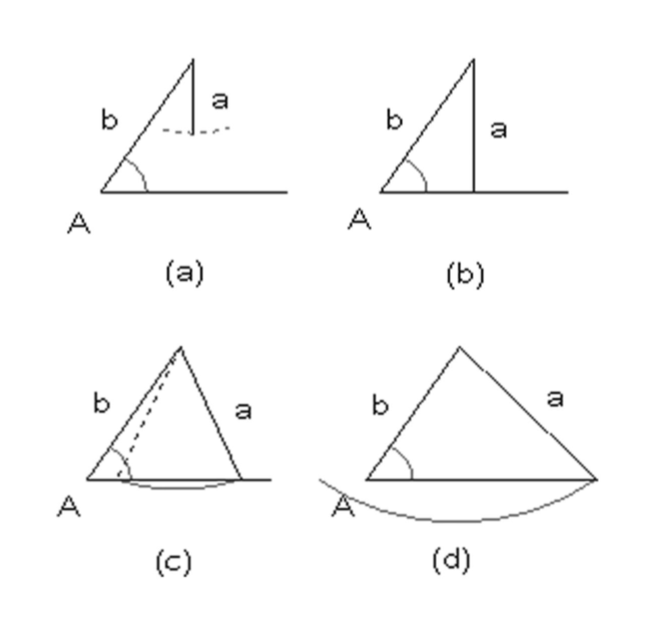
In the figure below, find X.
In the figure below, find the lengths of the other two
sides of this quadrilateral.
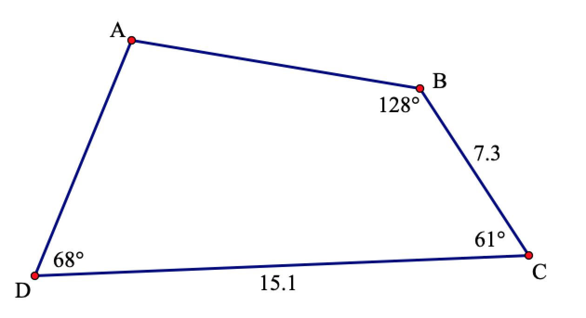
Heron’s Formula
Suppose you have $\Delta {ABC}$.
Prove that its area, A, is given
by $A = \frac{1}{2}ab\sin C$
Use the Law of Cosines to express
$\cos C$ in terms of $a$, $b$, and $c$, and from Part b prove
Heron’s Formula: $A = \sqrt {s(s-a)(s-b)(s-c)}$,
where $s = \frac{1}{2}\left( {a + b + c} \right)$ is the
semiperimeter of the triangle.
Lesson 3:
Loci
Introduction
Picture your favorite seat on a gently turning Ferris wheel,
the hub of the wheel of a bicycle ridden along an undulating
country road, that chip on the rim of the wheel of the old
trolley as it hits the smooth flat road, or the middle rung of
a ladder as the ladder slides down a wall and along the flat
ground.
Sketch the path of:
The Ferris wheel seat.
The wheel’s hub.
The chip on the rim of the wheel of
the old trolley.
(Experiment with this one a bit.)
The ladder’s middle rung.
(Experiment with this one a lot.)
To check your answer to problem 1d, try the webpage,
http://homepage.mac.com/dscher/ladder.html
These four familiar settings provide a peep into a very
interesting concept in mathematics. In the first instance, you
might have drawn a circle for the path of your favorite seat.
Mathematicians would refer to this path as the locus (plural,
loci) of the seat, and would perhaps state it more
formally/awkwardly as follows:
“The locus of the seat of the Ferris wheel is a circle whose
center is the axis of the Ferris wheel and whose radius is
equal to the distance from your seat to the axis.”
So, in general, the locus of an object or point is the graph
of all the possible positions the object or point could occupy
under certain restrictions. This is the focus of our lesson. We
will try to describe loci in words as well as in equations
where possible, as well as to recognize shapes represented by
particular equations.
[For this lesson you will need to have a protractor, ruler
and compass.]
Development
For each of problems 2 through 7 do the following:
On a sheet of graph paper set up coordinate axes.
Find a point which satisfies the stated condition, and label it
$P$.
Draw as many such points $P$ as you can.
Decide whether these points form any particular shape. If so,
describe that shape.
The $x$-coordinate of the point is 5.
The point is always equidistant from the two points
$A\left( {3, - 5} \right)$ and $B\left( { - 1, - 3}
\right)$.
The $x$-coordinate of the point is always less than or equal
to the $y$-coordinate of the point.
The distance of the point from the $x$-axis is always twice
its distance from the $y$-axis.
The distance from the point to the origin is always 6.
First graph the points $M\left( {2,3} \right)$,
$A\left( {6,3} \right)$ and $C\left( {2,7} \right)$. Now
the restriction on a point $P$ is that the points $P$, $M$, $A$ and $C$
must form a parallelogram. What is the locus of $P$?
Remember, when you describe something, be sure that your
description is complete. It should thoroughly cover every
aspect of what’s being described.
Your description should also be unambiguous. This means that
it should be completely clear, and not open to any different
interpretations. You should ask yourself, “Would it be possible
for the reader to read my description carefully, but
misunderstand what I mean?” If so, you know you need to be more
specific.
Finally, your description should be understandable to the
intended reader.
One could describe the locus of $P$ in problem 3 as the perpendicular bisector
of the line segment $AB$. Describing a
locus in words makes it relatively easy to draw the locus, but
it is also useful to describe the locus with an equation or
equations, when this is possible. An equation allows you to
find specific locus points quite quickly.
Returning to problem 3, in which $P$ is always equidistant
from the two points $A\left( {3, - 5} \right)$ and
$B\left( { - 1, - 3} \right)$, let the
coordinates of $P$ be $\left( {x,y} \right)$.
The condition for $P$ could be written
“The distance from $P$ to $A$ is the same as the distance from $P$ to
$B$.” Using the coordinates and diagram above, translate this
sentence into symbols.
In part a, you should have written
an equation. Simplify this equation as much as possible.
Check your answer in part b for
plausibility in a couple of ways.
First check to see that the point $(1, - 4)$ satisfies your
equation in part b. Why must this be the case?
Second, choose any other point whose coordinates satisfy your
equation and do a calculation to see if the distance from that
point to $A$ and $B$ is the same.
Returning again to problem 3, let’s check to see if
your
description of the locus was indeed correct.
Find the slope and midpoint of
$\overline {AB} $.
Use your answers for part a to find
the equation of the
perpendicular bisector of $\overline {AB} $.
Looking again at problem 6, with the help of distance
formula
or Pythagoras’ Theorem, write an equation to describe the
path of the point $P$.
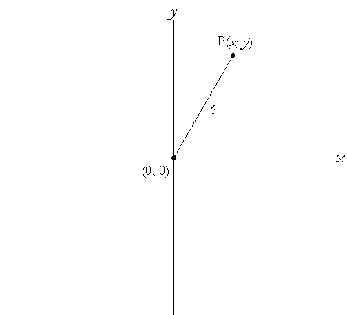
Write an equation/inequality for the locus in each of the
following. Also, in each case check that your answer is
plausible by seeing if a couple of easily tested points
indeed satisfy your equation.
Problem 2 ($P$’s $x$-coordinate is
5.)
Problem 4 (The $x$-coordinate of $P$ is
always less than or equal to the $y$-coordinate of $P$.)
Problem 5 ($P$’s distance from the
$x$-axis is always twice its distance from the $y$-axis.)
The distance from $P$ to the point is always 6.
Describe the locus of $P$.
Write an equation for the locus of
$P$.
The distance from $P$ to the point $S\left( {h,k} \right)$ is always $r$.
Describe the locus of $P$.
Write an equation for the locus of
$P$.
Check that your answer for part b
is reasonable when h and k are negative numbers far from zero
and $r$ is a small positive number, and then check it again for
when $h$ and $k$ are negative numbers close to zero and $r$ is a
large positive number.
Describe the locus of the point whose equation is:
${(x - h)^2} + {(y - k)^2} =
{r^2}$
${(x + 4)^2} + {(y + 13)^2} =
100$
The equation of the locus of point $P$ is given. Describe or
draw the graph of the locus. (Making a chart first could be
quite useful.)
$x + y = 10$
$x = \left| y \right|$
${x^2} = {y^2}$
One could argue that in some cases a description of a
locus by equation is better than a description in words. What
do you think? Give a couple of examples to support your
position.
Practice
In each case describe the graph and, if possible, write an
equation for the locus of $P$. Make sure to check that the
equations you come up with are plausible, by checking a
couple of interesting and/or “extreme” points that “should”
be part of the locus.
The $x$-coordinate of $P$ is always
7.
$P$’s distance from the $y$-axis is
three times its distance from the $x$-axis.
$P$’s distance from the $y$-axis is
always greater than its distance from the $x$-axis.
The distance from $P$ to the origin
is always less than 6.
Graph the points $M\left( {5,3}
\right)$ and $N\left( {10,3} \right)$. Triangle $MPN$ is always isosceles with base
$\overline {MN}$.
Graph the points $E\left( {-5,3} \right)$ and $D\left( { -
10,3} \right)$. Triangle $EPD$ is always equilateral.
Draw or describe the locus of a point $P$ whose coordinates
satisfy the equation $3x + 4y = 12$.
Write an equation for the locus of a point which is always
7 units from the point
$\left( {2,-7} \right)$.
$\left( {10,8} \right)$.
Describe the locus of a point whose equation is given by
${(x - 2)^2} + {(y + 4)^2} = 25$.
Problems
Describe the following loci.
$P$ is equidistant from the points
$A\left( {3,5} \right)$, $B\left( {3,8} \right)$ and
$C\left( {10,8} \right)$.
$P$ is equidistant from the points
$A\left( {3,5} \right)$, $B\left( {3,8} \right)$, $C\left( {10,8} \right)$, and $D\left( {11,5} \right)$.
$P$ always forms a triangle with the
points $R\left( {3,-5} \right)$ and $S\left( {-1,4} \right)$.
Describe the locus given by each of the following
equations:
If you wish to plant some trees so that each tree is
equidistant from every other tree, how many trees are you
able to plant?
Graph the points $J\left( {2,-6} \right)$ and $L\left( {2,10} \right)$. In each case describe the locus of
$P$. (You might want to do some careful drawing.)
$P$ is such that $PJ + PL$ is equal
to 16 units.
$P$ is such that $PJ + PL$ is equal
to 18 units.
Graph the points $A\left( {0,-3} \right)$ and B$\left( {0,7} \right)$. $P$ is
always 4 units from the line segment $AB$. Describe the locus
of $P$.
What would the locus of the points a distance 6 from
$\left( {0,0} \right)$ be if one could only move an
integral amount left/right and up/down?
Graph the points $M\left( {2,3} \right)$, $A\left(
{5,7} \right)$ and $C\left( {-1,5} \right)$. Point $P$ is such that the points $P$, $M$, $A$
and $C$ always form a parallelogram. Describe the locus of $P$ as
fully as possible.
With harder problems that have formulas that you are
deriving, a plausibility check is a necessity, as it is all too
easy to make a conceptual or algebraic mistake when coming up
with the equation, and a plausibility check is a quick way to
see if you have made some kind of error. For the next few
problems be sure to make a plausibility check so that you can
be more confident your answer isn’t flawed.
Graph the points $R\left( {5,0} \right)$ and $S\left( {-5,0} \right)$ . Point $P$
is such that the angle $RPS$ is
always a right angle.
Describe the locus of $P$. (Carefully
plot points on graph paper, using a protractor or some object
with a ${90^o}$ angle.)
Write an equation for the locus of
$P$.
What general statement do parts a and
b suggest?
Point $P$ is such that its distance from the point $\left(
{0,2} \right)$ is the same as its distance from the line$y
= - 2$.
Carefully sketch the locus of
$P$.
Describe the shape of the
locus.
Write and simplify an equation for
the locus.
Construct a locus problem different from the ones you have
encountered in this
lesson.
Exploring
in
Depth
Graph the points $M\left( {5,3} \right)$ and $N\left( {10,3} \right)$. Triangle
$MPN$ is always isosceles. What is the locus of $P$?
Graph the points $R\left( {5,0} \right)$ and . Point P
is such that the measure of $\angle RPS$ is always ${30^
\circ }$. The locus of $P$ seems to be two pentagons, one at
the top of $\overline {RS} $ and one at the bottom. What do
you think? Be sure to make a cogent argument.
The diagram below models the ladder problem of problem 1.
Find the equation of the locus of the midpoint of the ladder
$\overline {AB} $ as $A$ slides along the wall and $B$ along
the ground. (Hint: besides the length of the ladder another
length remains
constant throughout the motion.)
$E$ is the point $\left( {3,5} \right)$ and $T$ is the point
$\left( {3,11} \right)$. Describe and find an equation for
the locus of $P$, given that the area of
triangle $EPT$ is always 12 cm$^2$.
In the spiders and flies game, flies fly in circles and
spiders crawl on horizontal lines. In this particular game,
the flies must fly in circles with center $\left( {0,1}
\right)$.
And here is the rule for spiders:
Spiders crawling on a line $r$ units from the $x$-axis can only
catch flies that are moving on the circle whose radius is
$r$.
So flies will be caught at the points $P$ and $Q$ in the diagram
below.
Suppose flies were flying on the
circle with radius 5. At what point would they be caught by
spiders?
Would any flies be caught at the
point $\left( {2,2.5} \right)$ ? How about the points $\left( {1,1} \right)$,
$\left( {3,3} \right)$ and $\left( {0,0.5} \right)$?
Carefully sketch the locus of the
point where a spider catches a fly.
Describe the shape of the locus.
Write and simplify an equation for
the locus.
In one spiders and flies game in problem 35 the equation
of the locus of the capture is $y = 4{x^2}$. What are
the rules for this particular game?
Don’t use a calculator for this problem.
Reduce: $\frac{{{a^2} - {b^2}}}{{a
+ b}}$
Separate and reduce:
$\frac{{\sqrt x + {x^2}}}{{\sqrt {{x^3}} }}$